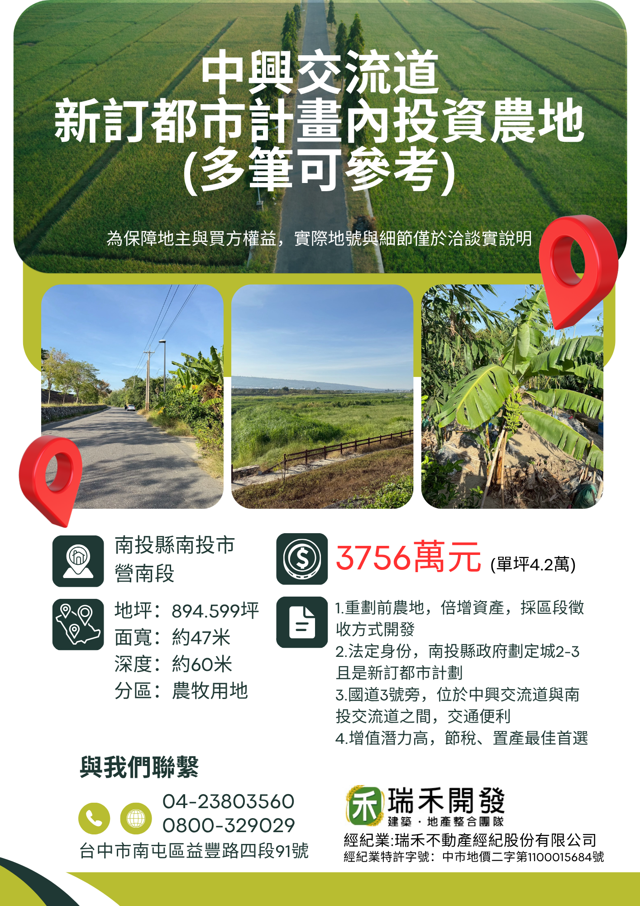
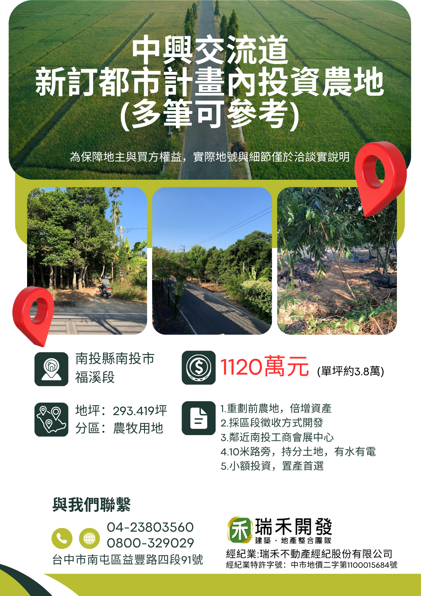

專辦【都市計畫區・特定區・區段徵收土地】 — 從地主整合到投資開發，規劃到位。
國道 3 號中興交流道周邊 726 公頃新訂都市計畫已進入推動期，
涵蓋南投市營南、營北、福興等 16 里，預留捷運站與轉運站用地。此刻正是布局關鍵節點。
瑞禾提供 ——
◆ 土地條件 專業評估
◆ 協助地主整合、共識形成
◆ 對接合適買方
瑞禾提供 ——
◆ 提供可售物件
◆ 條件初判
◆ 協助整合地主、節省時間與成本
位於貓羅溪東側、國道 3 號中興交流道附近地區，涵蓋中興新村（含南內轆）、草屯鎮、南投市（含南崗）等 3 處非都市土地。 北以溪州埤排水為界、東西以都市計畫為界、南以軍功里、東山路以及南投酒廠為界，總面積含貓羅溪流域共 726 公頃。 範圍涵蓋南投市的營北、營南、福興、永豐、新興、內新、平山、漳和、漳興、內興、軍功、平和、振興，與草屯鎮的碧洲、上林、山腳里 ——共 16 里。
中興大學中興新村分校、中科中興園區陸續進駐，搭配計畫內預留的捷運站／轉運站用地， 商業腹地擴大可望帶動南投市、草屯鎮雙核發展。 南投縣國土計畫已指認此區為未來發展地區，作為新訂都市計畫推動。
中興交流道特定區土地多採區段徵收方式進行開發，重劃前的農地具備「倍增資產」的條件。 但區段徵收過程牽涉法規、權屬整合、徵收補償計算等專業面向， 瑞禾團隊在計畫公展、地主說明會、抵價地分配等各階段，皆能提供地主與買方完整協助。
為保障地主與買方權益，實際地號與細節僅於洽談時說明。以下為目前可洽詢之代表性物件。


我們提供 726 公頃計畫範圍解析、各分區可能用途、預定捷運站位置推估、區段徵收抵價地配比說明。
地主端：提供土地條件評估、整合策略、與買方對接的時間表規劃。
買方端：條件初判、地主整合、權屬釐清、議價策略 ── 從接觸到成交，全程協助。